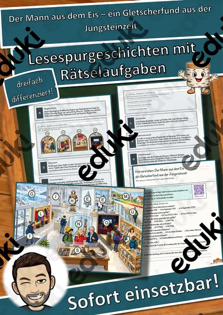
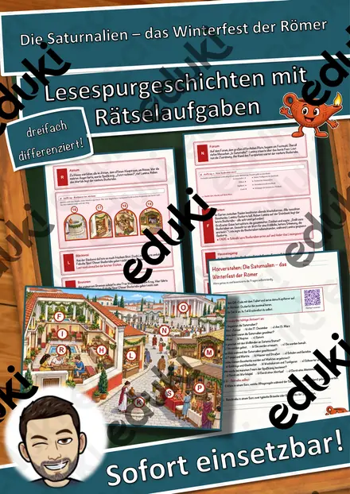
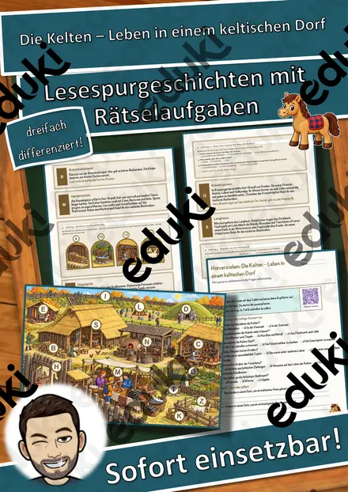
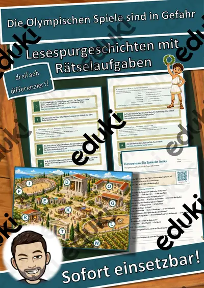
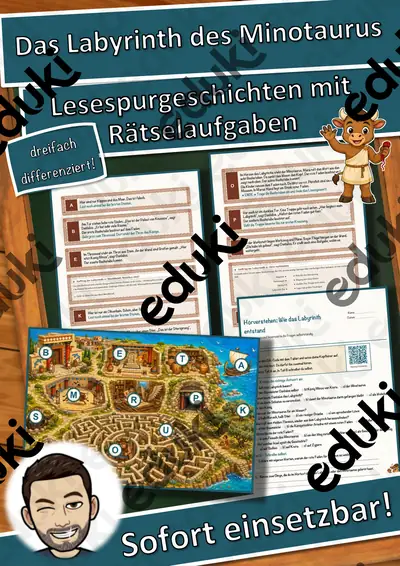
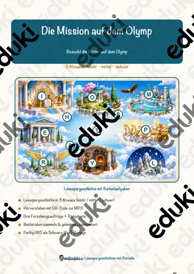
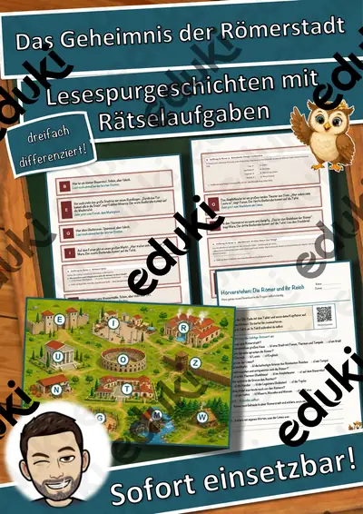
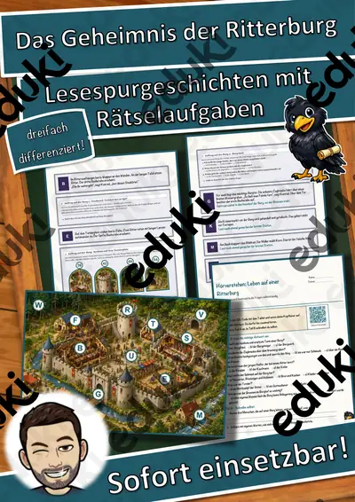

Die Wikinger – Lesespurgeschichte mit Rätselaufgaben (Klasse 6)
Begib dich mit deiner Klasse auf eine spannende Lesespur ins Frühmittelalter! Die Kinder begleiten Lena und Jonas und den jungen Wikinger Erik durch ein Wikingerdorf am Fjord – vom Langschiff am Steg über den Häuptling, das Langhaus und die Schmiede bis zum Markt, der Weberin, dem Runenstein und der großen Festhalle. Am Ende jedes Abschnitts verrät ein Hinweis den nächsten Ort auf dem Dorfplan – nur wer richtig liest und mitdenkt, findet den Weg und sammelt alle geheimen Buchstaben zum Lösungswort.
Diese Lesespurgeschichte verbindet motivierendes, sinnentnehmendes Lesen mit echtem Sachwissen über die Wikinger und rückt zugleich das gängige Bild vom „wilden Räuber“ zurecht: Die meisten Wikinger waren Bauern, Handwerker und weit gereiste Händler. Das Material ist SOFORT EINSETZBAR und in DREI DIFFERENZIERUNGSSTUFEN (leicht ★ / mittel ★★ / schwer ★★★) angelegt, sodass alle Kinder einer Klasse am selben Thema arbeiten können.WICHTIG: Das komplette Material ist sowohl in FARBE als auch in SCHWARZ-WEISS enthalten – ideal zum Sparen von Druckkosten.DAS IST ENTHALTEN
- Lesespurgeschichte in 3 Niveaus (leicht, mittel, schwer)
- farbiger Dorfplan als Suchkarte
- Hörverstehen mit QR-Code zur MP3 (Kinder hören selbstständig mit Kopfhörern)
- vier Aufträge auf dem Weg: ein Verbinde-Rätsel, ein Sach-Quiz, eine Rechenaufgabe und ein Steckbrief
- Rätselseite (Wörter-Suchsel + Wissensfragen)
- Ausmalbild zum Thema (Wikingerdorf am Fjord)
- ausführliches Lösungsblatt für die Lehrkraft
- alles zusätzlich als komplette Schwarz-Weiß-VarianteSO FUNKTIONIERT DIE LESESPURDie Kinder lesen ab START, entnehmen dem Text einen Hinweis auf einen Ort, suchen ihn auf dem Plan und lesen beim dort abgebildeten Buchstaben weiter. Eingebaute Sackgassen dienen der Selbstkontrolle. Am Ende werden die gesammelten Buchstaben umgestellt und ergeben ein geheimes Lösungswort. (Die Lösungen sind selbstverständlich nur im Lösungsblatt für die Lehrkraft enthalten.)INHALTLICHER SCHWERPUNKTDas Leben in einer Wikinger-Siedlung: Langschiff und Seefahrt, der Häuptling und das Thing als frühe Form der Mitbestimmung, das Langhaus als Wohnhaus, das Handwerk in der Schmiede, der Handel durch Tausch auf dem Markt, die Runen und Runensteine als Schrift, die Rolle der Frauen (Weben von Stoff und Segeln) und das gemeinsame Fest. Kindgerecht, gewaltfrei und sachlich richtig dargestellt.ABGEDECKTER LEHRPLAN (Sekundarstufe/Geschichte, Frühmittelalter)
- Geschichte – Leben und Alltag der Wikinger: Seefahrt und Langschiffe, Handel und Handwerk, Siedlung und Langhaus, Runen, Mitbestimmung beim Thing, Rolle der Frauen; kritisches Hinterfragen gängiger Vorstellungen („wilde Räuber“).
- Deutsch – Lesen: Lesestrategien anwenden, Texten gezielt Informationen entnehmen, sinnentnehmend und selektiv lesen, Schlüsselwörter nutzen; Selbstkontrolle und Lesemotivation durch die Lesespur; Zuhören: einem Sachhörtext konzentriert folgen und Wesentliches entnehmen (Hörverstehen mit MP3).
- Mathematik – einfache Sachaufgaben (Addition und Subtraktion) rund um das Dorfleben.
- Fächerübergreifend / Kompetenzen: selbstständiges Arbeiten, genaues Lesen und Prüfen, Konzentration und Ausdauer, kreatives Gestalten (Ausmalbild).
Geeignet für Freiarbeit, Stationenlernen, Vertretungsstunden, Wochenplan und Homeschooling. Differenziert einsetzbar in mehreren Jahrgangsstufen.
Ähnliche Materialien

Der Mann aus dem Eis – ein Gletscherfund aus der Jungsteinzeit – Lesespurgeschichte mit Rätselaufgaben (Klasse 6)

Die Saturnalien – das Winterfest der Römer – Lesespurgeschichte mit Rätselaufgaben (Klasse 6)

Die Kelten – Leben in einem keltischen Dorf – Lesespurgeschichte mit Rätselaufgaben (Klasse 6)

Die Olympischen Spiele sind in Gefahr – Lesespurgeschichte mit Rätselaufgaben (Klasse 6)

Das Labyrinth des Minotaurus – Lesespurgeschichte mit Rätselaufgaben (Klasse 6)

Die Mission auf dem Olymp – Lesespurgeschichte mit Rätselaufgaben (Klasse 6)

Das Geheimnis der Römerstadt – Lesespurgeschichte mit Rätselaufgaben (Klasse 6)
